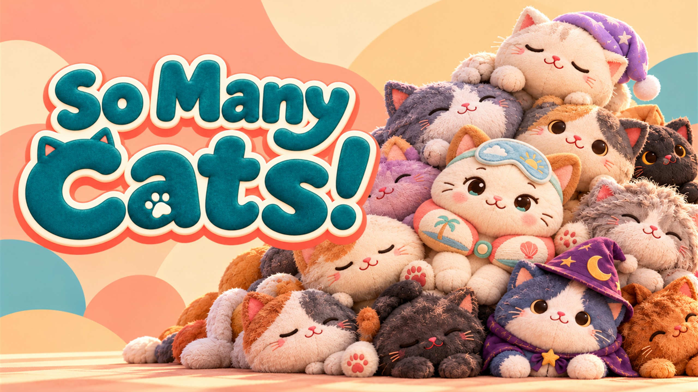

From piles to shelves
Find and sort 4,608 plush cats, fill matching shelf spaces, and carry giant cats to their own cushions.
A little order. A lot of cats.
Turn piles of plush cats into tidy shelves. A cozy first-person organizing game about finding the right cat, filling the next shelf, and enjoying every little bit of progress.
Planned Early Access release: 13 November 2026.
Coming to Steam and Epic Games Store for Windows.

Find and sort 4,608 plush cats, fill matching shelf spaces, and carry giant cats to their own cushions.
Earn XP as you sort, unlock abilities and spend your earned coins on decorations for your shop.
Single-player organizing with no timers or pressure to hurry. Settle in for a few shelves or a longer sorting session.
The studio
We develop and publish So Many Cats! For game support, press or privacy questions, contact littlewondergames@hotmail.com.